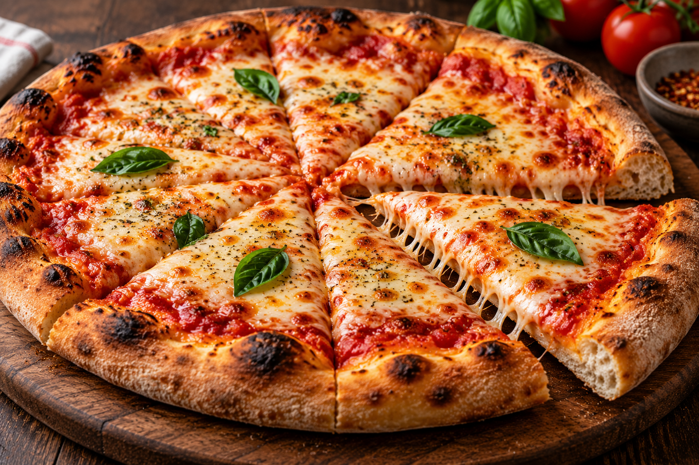

Pizza

Always In the Mood
Pizza is a delicious and popular Italian dish made with fresh dough,
tomato sauce, and melted cheese.
It has a crispy crust and a soft,
cheesy center.
It is easy to make at home and perfect for sharing
with family and friends.
Ingredients
- 2 cups all-purpose flour
- 1 cup warm water
- 1 teaspoon dry yeast
- 1 teaspoon sakt
- 1 tablespoon olive oil
- 1 cup tomato sauce
- 2 cups shredded mozzarella chease
- fresh basil leaves
- 1 teaspoon oregano
Steps
- In a large bowl, mix the flour, dry yeast, and salt.
- Add the warm water and olive oil, then mix until a dough forms.
- Knead the dough for about 10 minutes until smooth and elastic.
- Cover the dough and let it rise for about 1 hour.
- Preheat the oven to 475°F (245°C).
- Roll out the dough into a round pizza shape.
- Spread the tomato sauce evenly over the dough.
- Sprinkle the shredded mozzarella cheese on top.
- Add oregano and fresh basil leaves.
- Bake the pizza for 12–15 minutes until the crust is golden and the cheese is melted.
- Remove the pizza from the oven and let it cool for a few minutes.
- Slice the pizza and serve hot.